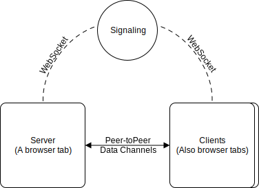

<script src="beakman.min.js"></script>
<script src="https://cdn.rawgit.com/google/code-prettify/master/loader/run_prettify.js"></script>
<script
  src="https://code.jquery.com/jquery-3.4.1.min.js"
  integrity="sha256-CSXorXvZcTkaix6Yvo6HppcZGetbYMGWSFlBw8HfCJo="
  crossorigin="anonymous"
></script>

<style>
  @import url("https://fonts.googleapis.com/css?family=GFS+Didot:400|Griffy:400");

  html {
    font-size: 16px;
  }

  * {
    box-sizing: content-box;
  }

  body {
    background-color: white;
    font-family: "Poppins", sans-serif;
    font-weight: 400;
    line-height: 1.45;
    color: #333;
  }

  p {
    margin-bottom: 1.25em;
  }

  h1,
  h2,
  h3,
  h4,
  h5 {
    margin: 0.5rem 0 1rem;
    font-family: "GFS Didot", serif;
    font-weight: 400;
    line-height: 1.15;
  }

  h1 {
    margin-top: 0;
    font-size: 5.653em;
  }

  h2 {
    font-size: 3.998em;
  }

  h3 {
    font-size: 2.827em;
  }

  h4 {
    font-size: 1.999em;
  }

  h5 {
    font-size: 1.414em;
  }

  small,
  .text_small {
    font-size: 0.707em;
  }

  header,
  content {
    padding: 16px;
    max-width: 800px;
    margin: 0 auto;
  }

  table {
    width: 100%;
  }

  .columns {
    display: flex;
    flex-flow: row wrap;
    font-size: 14px;
  }
  .left {
    order: 1;
    min-width: 400px;
    width: 100%;
  }
  .right {
    order: 2;
    min-width: 400px;
    width: 100%;
  }

  @media only screen and (min-width: 840px) {
    .left {
      width: 50%;
    }
    .right {
      width: 50%;
    }
  }

  pre.prettyprint {
    border: 0;
  }
</style>

<header>
  <h5>Create a server in a browser tab</h5>
  <h1>Beakman</h1>
  <h3>A P2P room system for the web</h3>

  <div>
    Remember online games where you created your own server or room?<br />
    Remember Age of Empires? Counter Strike?<br />
    This library brings back the posibility to create Peer-to-Peer rooms from inside of a browser tab.<br />
    No need to host complicated infrastructure. Just code your JS game or tool.<br />
    <br />
    It works using <b>WebRTC</b>, so it works inside Node.js.<br />
    <br />
    It requires a signaling server (WebSockets), but you can use ours (see the examples section)<br />
    <br />
    Every connection will have two data channels, <b>a ordered and reliable one</b> and a
    <b>fast unordered one</b>.<br />
    Like TCP and UDP.
  </div>

  
  <div class="columns">
    <div class="left">
      <h4 style="text-align: center">Hosting a room</h4>
      <pre class="code prettyprint">
// SERVER

// My server data
const serverData = {
  name: 'server name'
}

function onConnection(client) {
  // Listening messages FROM client
  client
    .onDataObservable
    .add(onMessage)

  // Send messages TO client
  client.send('message')
}

// Listen for new connections
await broker.listen(
  serverData,
  onConnection
)

// Profit
        </pre
      >
    </div>
    <div class="right">
      <h4 style="text-align: center">Joining a room</h4>
      <pre class="code prettyprint">
// CLIENT

// Get the server list
const response =
  await broker.requestServerList()

// Pick a server from the list
const aServer = response
  .getServersList()
  .first()

// Connect to a server
const clientConnection =
  await broker.connect(aServer.alias)

// Listening messages FROM server
clientConnection
  .onDataObservable
  .add(onMessage)

// Send messages TO server
clientConnection.send('a message');

// Profit
        </pre
      >
    </div>
  </div>

  <h3>Demo chat room</h3>
  <div>
    This demo allows you to host a chat-room in your browser:
    <style>
      #room-list {
        width: 100%;
      }

      button,
      select,
      input {
        font-size: 14px;
      }

      #message-list {
        border: 1px solid black;
        height: 200px;
      }
    </style>

    <script>
      // Base configuration for WebRtc
      const rtcConfiguration = {
        iceServers: [
          { urls: "stun:stun.l.google.com:19302" },
          { urls: "stun:global.stun.twilio.com:3478?transport=udp" }
        ]
      };

      let broker = null;

      let remotePeers = new Set();
      let myConnection = null;
      async function getBroker() {
        // Connect to a signaling server
        broker =
          broker ||
          new Beakman.RemoteBroker({
            // WebRTC peer configurations
            rtcConfiguration,
            // signaling server url
            remoteWs: "wss://beakman-signaling.menduz.com",
            // protocol to identify this app in the shared signaling server
            protocol: "chat-demo-123"
          });

        setStatus("<select disabled>Connecting broker...</select>");

        // Wait for broker to be connected
        await broker.connectedFuture;

        setStatus("<select disabled>Broker connected...</select>");

        return broker;
      }

      function setStatus(html) {
        $("#room-list").html(html);
      }

      function escapeHtml(unsafe) {
        return unsafe
          .replace(/&/g, "&amp;")
          .replace(/</g, "&lt;")
          .replace(/>/g, "&gt;")
          .replace(/"/g, "&quot;")
          .replace(/'/g, "&#039;");
      }

      async function refresh() {
        const broker = await getBroker();

        setStatus("<option disabled>Loading server list...</option>");

        // Get the server list
        const response = await broker.requestServerList();

        const servers = response
          .getServersList()
          .map($ => `<option value="${escapeHtml($.getAlias())}">${escapeHtml($.getName())}</option>`)
          .join("");

        setStatus(servers);

        $("#join-button").removeAttr("disabled");
      }

      function sendToAll(message) {
        remotePeers.forEach($ => {
          try {
            $.send(message);
          } catch (e) {
            console.error(e);
          }
        });
        addMessage(message);
      }

      async function onConnectionServer(client) {
        // Listening messages FROM client
        client.onDataObservable.add(message => {
          sendToAll(client.socketId + ": " + message);
        });

        await client.awaitableConnected;

        // Send messages TO client
        client.send("Hello " + client.socketId + ", I am the server!");

        sendToAll("> " + client.socketId + " joined the room.");

        remotePeers.add(client);

        client.onDisconnected.add(() => {
          remotePeers.delete(client);
          sendToAll("> " + client.socketId + " left the room.");
        });
      }

      function addMessage(message) {
        $("#message-list").append($("<div>").text(message));
      }

      async function host() {
        const broker = await getBroker();

        // My server data
        const serverData = {
          name: "server name " + Math.random().toString(36)
        };

        setStatus("<option disabled>Creating server...</option>");

        // Listen for new connections
        const sv = await broker.listen(serverData, onConnectionServer);

        setStatus("<option disabled>Server created...</option>");

        showChat();

        addMessage("Waiting for connections...");

        console.log(sv);
      }

      function showChat() {
        $("#chat-lobby").css("display", "none");
        $("#chat").css("display", "block");
      }

      function hideChat() {
        $("#chat-lobby").css("display", "block");
        $("#chat").css("display", "none");
      }

      async function join() {
        const server = $("#room-list").val();

        if (!server) return alert("Please select a server");

        setStatus(`<option disabled>Joining server ${escapeHtml(server)}</option>`);

        // Connect to a server
        const clientConnection = await broker.connect(server);

        // Listening messages FROM client
        clientConnection.onDataObservable.add(addMessage);

        await clientConnection.awaitableConnected;

        showChat();

        remotePeers.add(clientConnection)
      }

      function send() {
        const input = $("#txt");
        const val = input.val();
        if (val.length > 0) {
          input.val("");
          sendToAll(val);
        }
      }

      function keyDown(event) {
        if (event.keyCode == 13) {
          event.preventDefault();
          send();
        }
      }
    </script>

    <div id="chat-lobby">
      <h4>Lobby</h4>
      <select id="room-list" size="10">
        <option disabled>- Click refresh to get the room list-</option>
      </select>
      <div>
        <button onclick="refresh()">Refresh</button>
        <button onclick="host()">Create room</button>
        <button id="join-button" onclick="join()" disabled>Join selected</button>
      </div>
    </div>
    <div id="chat" style="display: none;">
      <h4>Chat room</h4>
      <pre id="message-list"></pre>
      <div>
        <input placeholder="Type your message" onkeydown="keyDown(event)" id="txt" /><button onclick="send()">
          Send
        </button>
      </div>
    </div>
  </div>

  <h3>Links</h3>
  <div>
    <ul>
      <li><a href="https://arduz.io">Arduz Online</a> - A WIP game built with this library</li>
      <li><a href="https://girhub.com/menduz/beakman">GitHub Repo</a> - Beakman's source code</li>
      <li><a href="https://girhub.com/menduz/beakman-signaling">GitHub Signaling Repo</a> - Beakman's Signaling Server source code</li>
    </ul>
</header>
